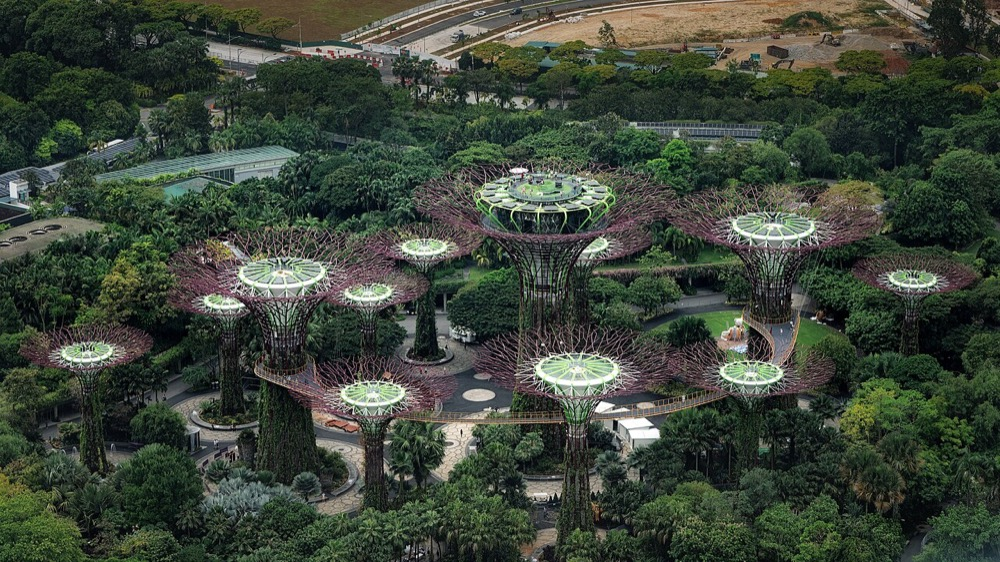

Сингапур

Сингапур — город, который доказывает, что фантастика может быть аккуратной. Сады у бухты: супердеревья высотой с двадцатиэтажку, которые вечером проводят музыкальное шоу света, и два купола — цветочный и облачный лес, где температура искусственно держится на уровне гор. Марина-Бэй-Сэндс с кораблём на трёх башнях — смотровая на 57-м: лучший вечерний ракурс на залив и на город, который любит порядок. Хокер-центры — гастрономический парадокс: лапша за три доллара с мишленовским рейтингом, чили-краб, и всеядные очереди, где бухгалтер и таксист едят рядом. Зоопарк ночной — животные не притворяются, что ночуют, а выходят на смену; речной сафари с пандами — держите план утра. Культурные слои настоящие: Чайна-таун, Маленькая Индия, мечеть Султана в кампонг-гламе. Практика: город дорогой на алкоголь и щедрый на метро, зонт — не только от дождя, но и от солнца. планируйте три дня: город мал, но плотный, как хороший эспрессо.
Что знать перед поездкой
- Супердеревья — вечером, на шоу света
- Хокер-центр — ешьте, где очередь из местных
- Зонт днём — от солнца, не только от дождя